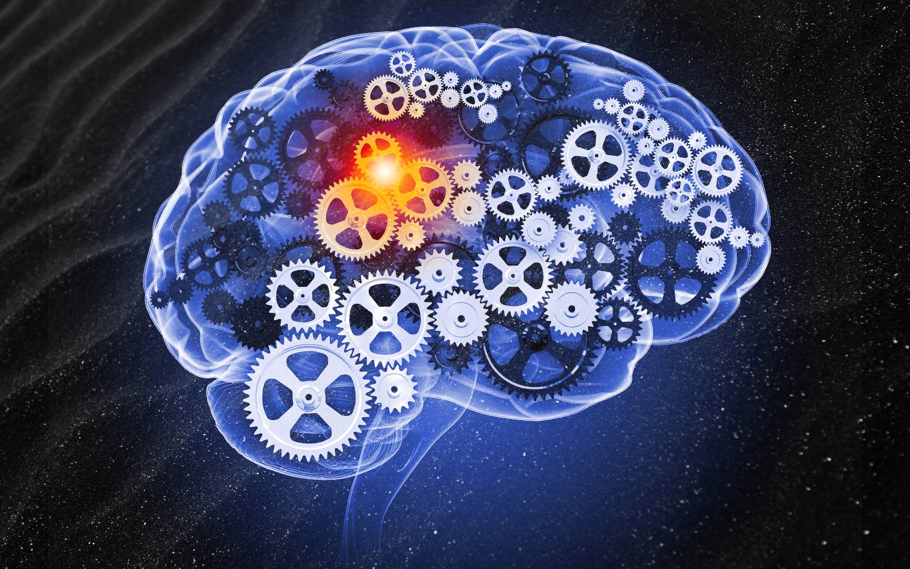

KI-systemen werken op basis van algoritmen en gegevens. Ze leren van grote hoeveelheden gegevens door patronen en trends te identificeren.
Het omvat een breed assortiment aan technologieën en systemen die proberen menselijke intelligentie na te bootsen of te verbeteren.
Deze systemen werken meestal op basis van geavanceerde algoritmen en dataverwerking.
Hieronder staan de belangrijkste elementen van KI-systemen:
- Data-acquisitie: KI-systemen beginnen meestal met het verzamelen van enorme hoeveelheden gegevens uit verschillende bronnen, zoals tekst,
afbeeldingen, geluiden en sensoren. Deze gegevens vormen de grondstof voor het trainen en verbeteren van het KI-systeem.
- Data-voorbereiding: De onbewerkte gegevens worden schoongemaakt, gestructureerd en georganiseerd om bruikbaar te zijn.
- Machine Learning (ML): ML-algoritmen vormen het hart van KI-systemen. Deze algoritmen zijn onderverdeeld in 3 categorieën: supervized, unsupervized en reinforcement learning. Supervised learning gebruikt gelabelde gegevens om het systeem te trainen om voorspellingen te doen. Unsupervised learning identificeert patronen en structuren in gegevens zonder labels.
Reinforcement learning leert door interactie met een omgeving en ontvangt beloningen voor positieve acties.
- Neurale netwerken: Neurale netwerken zijn een populair ML-model dat is geïnspireerd op de werking van onze hersenen.
Ze bestaan uit veel lagen van neuronen die gegevens verwerken en hierdoor patronen kunnen leren en herkennen.
- Feature engineering: Feature engineering is het creëren van kenmerken of attributen uit de gegevens om het leren van een model te vergemakkelijken en de prestaties te verbeteren.
- Training: Bij training past het systeem zich aan om de voorspellende nauwkeurigheid te verbeteren.
Dit gebeurt door het vergelijken van voorspellingen met echte gegevens en het aanpassen van het model.
- Inferentie: Nadat het model is getraind, kan het worden ingezet om voorspellingen te doen of beslissingen te nemen op basis van nieuwe gegevens.
- Natural Language Processing (NLP): Voor taalgerelateerde taken maakt KI gebruik van NLP-technieken om de tekst te begrijpen, genereren en te vertalen.
Hiervoor zijn bijvoorbeeld chatbots en automatische vertaling.
- Computer Vision: In computer vision gebruikt KI beeldverwerkingstechnologieën om visuele gegevens, zoals afbeeldingen en video's, te begrijpen en te analyseren.
Toepassingen omvatten gezichtsherkenning, objectdetectie en autonome voertuigen.
- Reinforcement Learning: Dit onderdeel voor machine learning zorgt ervoor dat het systeem leert door interactie met een omgeving en het maximaliseren van beloningen.
Het wordt vaak gebruikt in autonome systemen, zoals zelfrijdende auto's.
Er zijn heel veel soorten KI-systemen die allemaal voor iets anders gebruikt worden en dus allemaal anders werken. Wel hebben ze allemaal het doel om gegevens te analyseren, patronen te ontdekken en taken uit te voeren die anders menselijke intelligentie vereisen.